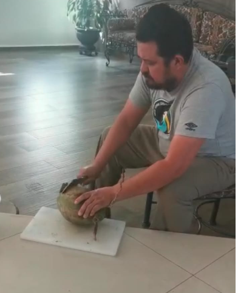

Hola Amigos, creo que todos conocemos a cesar, o mejor conocido como el papá de Ana Karen, pero hay preguntas que no hemos contestado aún, ¿Quien es? ¿De donde viene? ¿Es posible ser tan GUAPO?. Calma amigos, yo se que estas preguntas les causan incomodidad (porque es obvio que quisieramos conocer todo acerca de Cesar). Así que en este pequeño y humilde blog voy a tratar de Contestar cada una de estas dudas y de paso hacer una encuesta de este hermoso ser.
Cesar: ¿Quién es?

Como pueden ver en la imagen Cesar es un semental que hace mucho tiempo no se ve, de hecho la
última vez que se vio a un semental como este fue en el año 300 a.c. Cuando Afrodita (la diosa
de la bellesa) le regalo todos sus dones a una persona registrada como Διακόπτω, Διακόπτω es un nombre griego
el cual si lo traducimos al español dice ¡CESAR! (no, no es broma) con esto podemos resolver
uno de los misterios de las preguntas que se propusieron en el comienzo del blog. ¡Διακόπτω sigue vivo!
y lo mejor de todo ¡es el Papá de ANA!, ok pero ¿esto que quiere decir?, chicos, esto quiere decir
que Διακόπτω es un semental inmortal, sabio y muy poderoso que simplemente en algún punto de la historia
emigró a México y se cambio el nombre a Cesar. De hecho hay muchas teorias que dicen que Διακόπτω
tambien fue el famoso filosofo Diógenes y que de hecho Διακόπτω fue el verdadero inventor de la electrcidad
asi como tambien lo fue de la corriente alterna.
Es más para que vean que afrodita si es la legitima diosa de la bellesa he aquí una prueba irrefutable
CLICKEAME :))